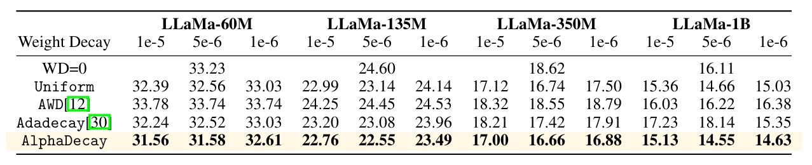

Main Results: LLaMA Pre-training on C4 Dataset
Comparison with various weight decay scheduling strategies using Adam optimizer on pre-training various sizes of LLaMa models (60M, 135M, 350M, 1B) on C4 dataset. Validation perplexity (↓) is reported. All baselines are carefully tuned. AlphaDecay consistently outperforms uniform decay, AWD, and AdaDecay across all model sizes and weight decay values.
